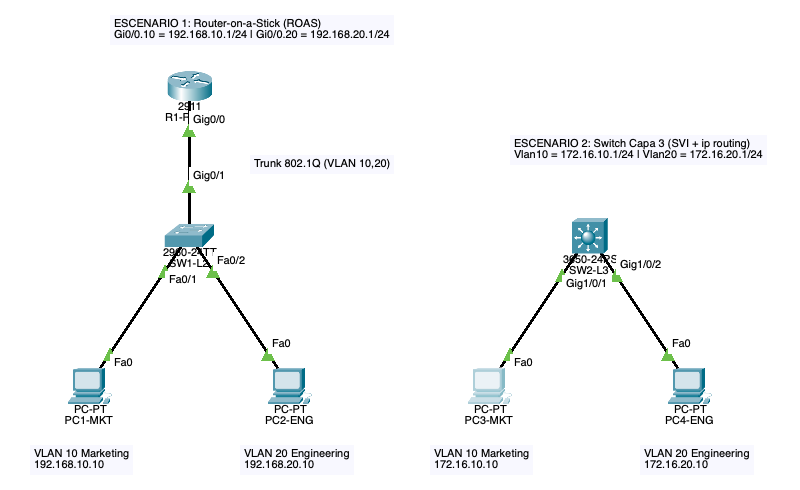
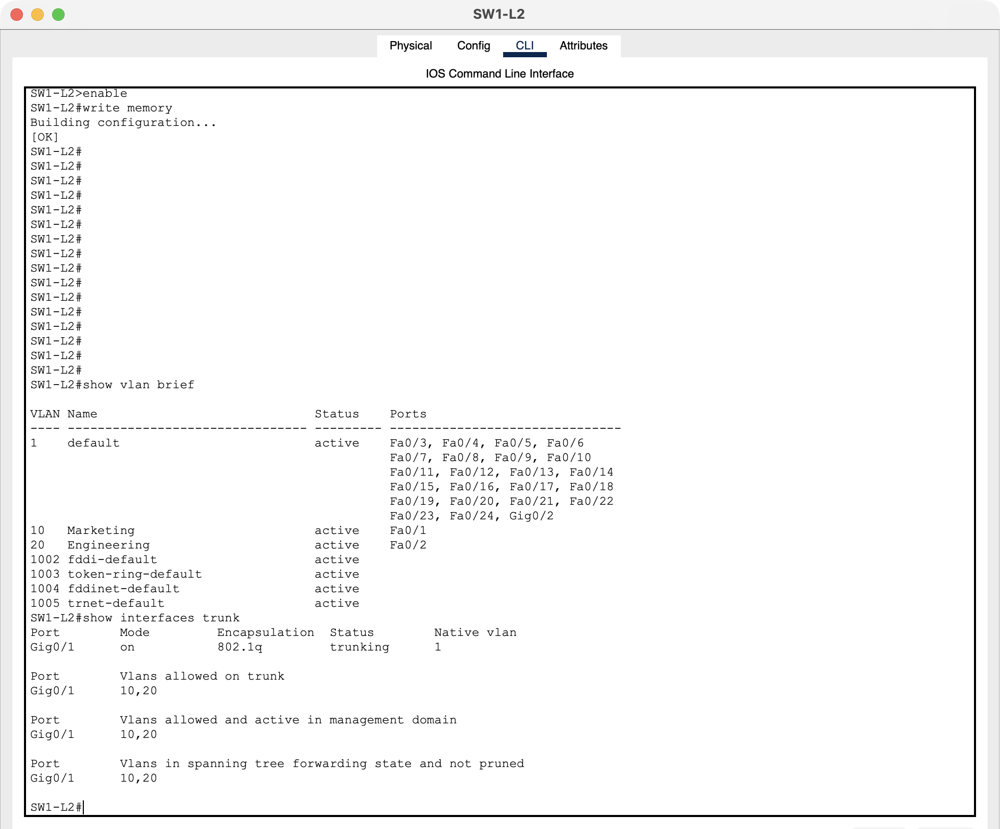
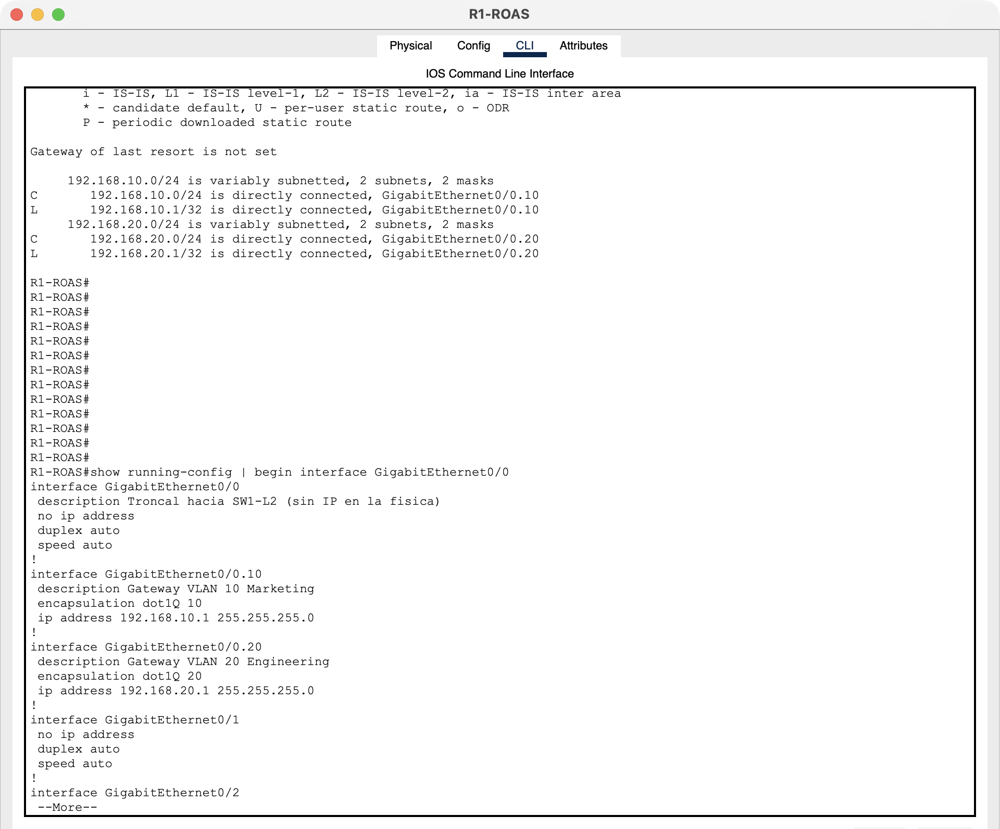
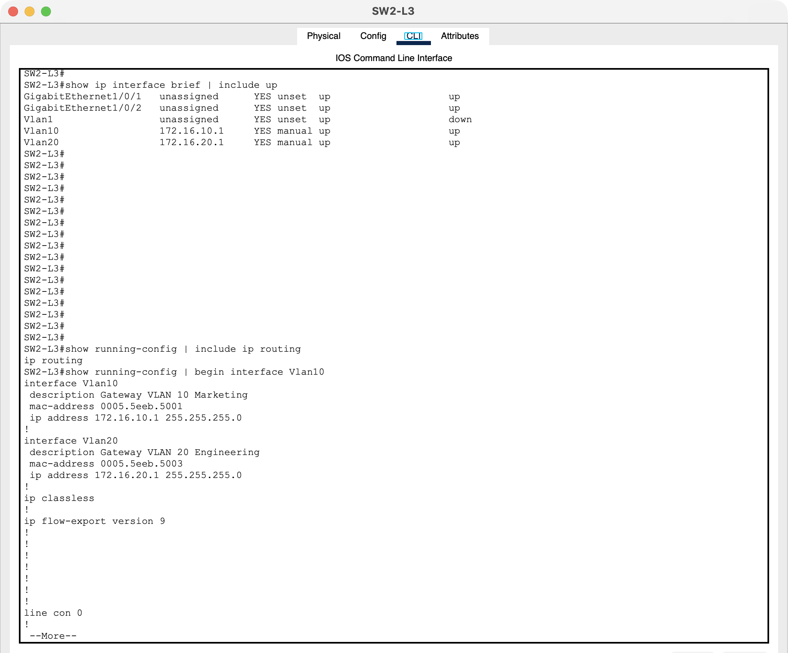
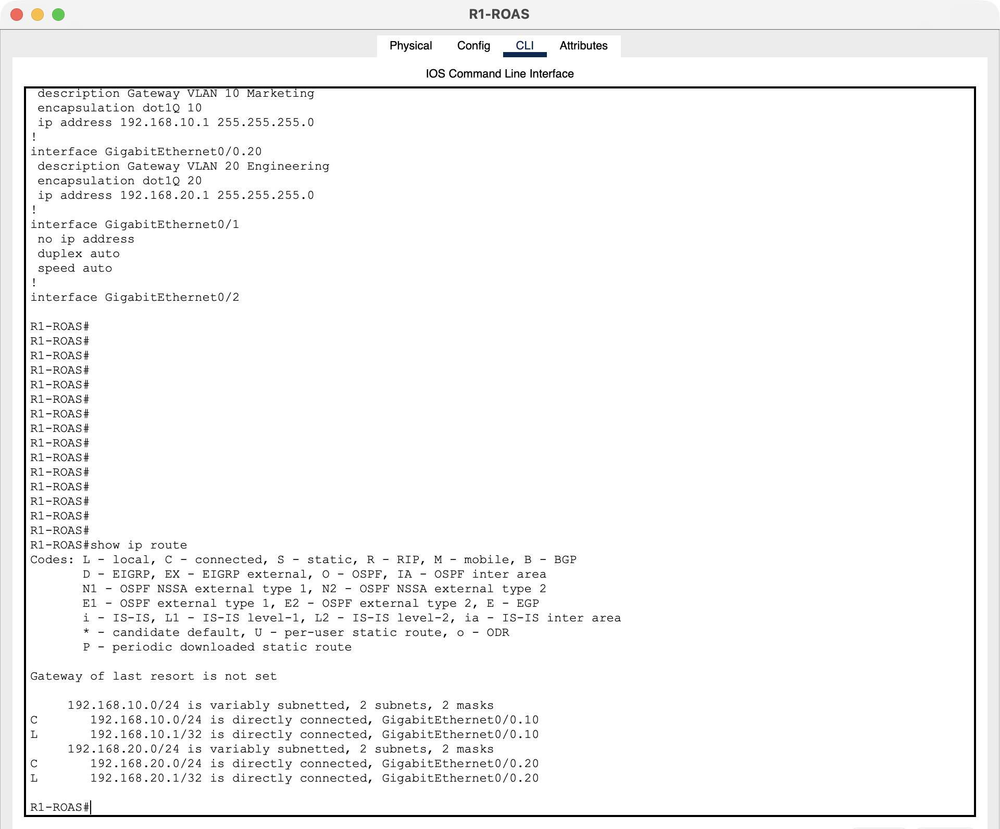
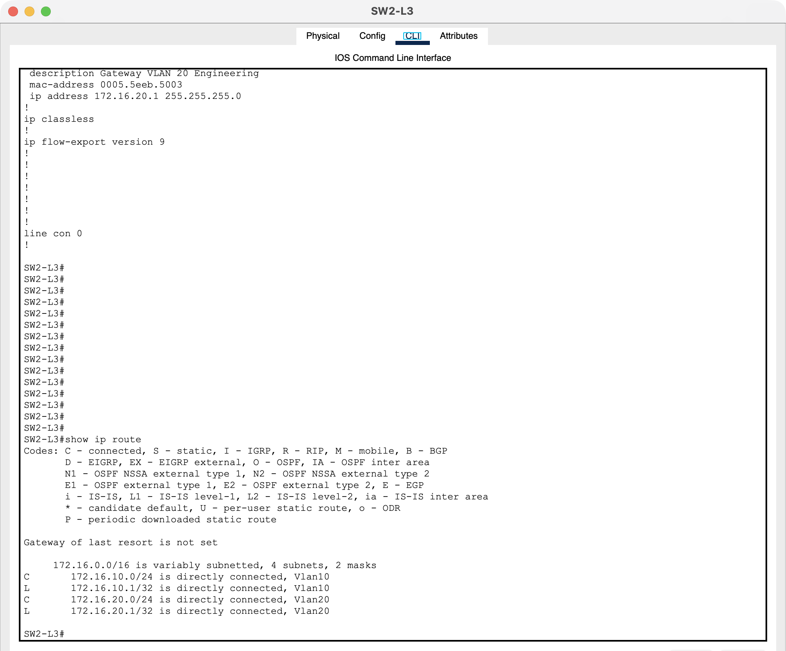
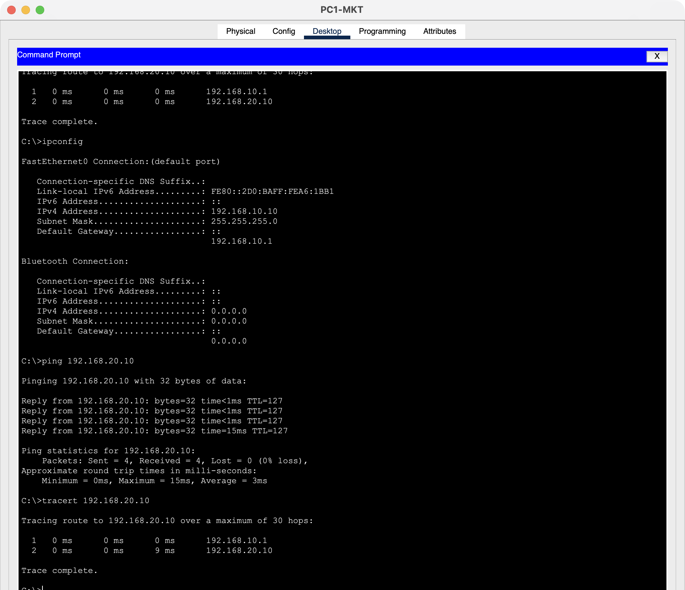
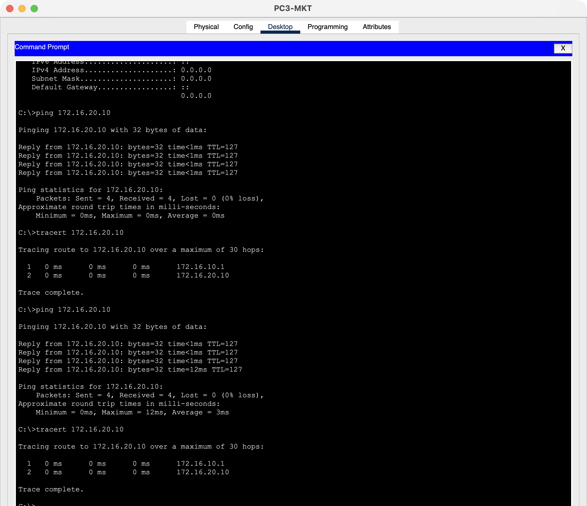

La topología tiene dos escenarios independientes en el mismo archivo, uno por método de enrutamiento Inter-VLAN. Ambos usan las mismas VLANs (10 Marketing y 20 Engineering), pero con redes IP distintas para que las tablas de enrutamiento de cada gateway no se confundan entre sí.
| Escenario | Dispositivos | Gateway VLAN 10 | Gateway VLAN 20 |
|---|---|---|---|
| 1 — ROAS | Router 2911 (R1-ROAS), Switch 2960-24TT (SW1-L2), 2 PCs | G0/0.10 — 192.168.10.1/24 | G0/0.20 — 192.168.20.1/24 |
| 2 — SVI | Switch multicapa 3650-24PS (SW2-L3), 2 PCs | Vlan10 — 172.16.10.1/24 | Vlan20 — 172.16.20.1/24 |
| Equipo | Interfaz / puerto | VLAN | Dirección IP | Gateway |
|---|---|---|---|---|
| R1-ROAS | G0/0 (física, sin IP) → SW1-L2 G0/1 | Troncal | — | — |
| R1-ROAS | G0/0.10 | 10 | 192.168.10.1/24 | — |
| R1-ROAS | G0/0.20 | 20 | 192.168.20.1/24 | — |
| PC1-MKT | Fa0 → SW1-L2 Fa0/1 | 10 | 192.168.10.10/24 | 192.168.10.1 |
| PC2-ENG | Fa0 → SW1-L2 Fa0/2 | 20 | 192.168.20.10/24 | 192.168.20.1 |
| SW2-L3 | interface Vlan10 | 10 | 172.16.10.1/24 | — |
| SW2-L3 | interface Vlan20 | 20 | 172.16.20.1/24 | — |
| PC3-MKT | Fa0 → SW2-L3 G1/0/1 | 10 | 172.16.10.10/24 | 172.16.10.1 |
| PC4-ENG | Fa0 → SW2-L3 G1/0/2 | 20 | 172.16.20.10/24 | 172.16.20.1 |

En el escenario 1 el único enlace troncal es el que une SW1-L2 (G0/1) con el router (G0/0): por ahí viajan las tramas de ambas VLANs etiquetadas con 802.1Q. En el escenario 2 no hace falta troncal, porque el enrutamiento ocurre dentro del mismo switch al que están conectadas las PCs.
vlan 10 name Marketing vlan 20 name Engineering interface FastEthernet0/1 switchport mode access switchport access vlan 10 interface FastEthernet0/2 switchport mode access switchport access vlan 20 interface GigabitEthernet0/1 switchport mode trunk switchport trunk allowed vlan 10,20
El 2960 solo soporta 802.1Q, por lo que no lleva switchport trunk encapsulation.
La troncal se limita a las VLANs 10 y 20.

show vlan brief (Fa0/1 en VLAN 10, Fa0/2 en VLAN 20) y show interfaces trunk (G0/1 troncal 802.1q con VLANs 10,20).interface GigabitEthernet0/0 no ip address no shutdown interface GigabitEthernet0/0.10 encapsulation dot1Q 10 ip address 192.168.10.1 255.255.255.0 interface GigabitEthernet0/0.20 encapsulation dot1Q 20 ip address 192.168.20.1 255.255.255.0
La interfaz física no lleva IP; solo se levanta con no shutdown, y las
subinterfaces heredan ese estado. encapsulation dot1Q N le dice a cada subinterfaz
qué etiqueta de VLAN acepta y con cuál marca las tramas que devuelve al switch.

encapsulation dot1Q y la física G0/0 sin IP.vlan 10 name Marketing vlan 20 name Engineering interface GigabitEthernet1/0/1 switchport mode access switchport access vlan 10 interface GigabitEthernet1/0/2 switchport mode access switchport access vlan 20 interface Vlan10 ip address 172.16.10.1 255.255.255.0 no shutdown interface Vlan20 ip address 172.16.20.1 255.255.255.0 no shutdown ip routing
Cada SVI es una interfaz lógica que representa a toda su VLAN dentro del switch, y sirve como
gateway de los hosts de esa VLAN. Una SVI solo se pone up/up si la VLAN existe y tiene al
menos un puerto activo asignado. Sin ip routing el 3650 tendría las dos IPs, pero no
reenviaría paquetes de una VLAN a otra.

ip routing activo y la configuración de las SVIs.
show ip route en R1-ROAS: 192.168.10.0/24 y 192.168.20.0/24 conectadas por G0/0.10 y G0/0.20.
show ip route en SW2-L3: 172.16.10.0/24 y 172.16.20.0/24 conectadas por Vlan10 y Vlan20.En los dos gateways las rutas aparecen como C (conectadas) y L (local, la /32 de la propia interfaz). No hacen falta rutas estáticas ni protocolos dinámicos, porque ambas redes están directamente conectadas al mismo dispositivo. La diferencia es la interfaz de salida: en el router son subinterfaces de un único puerto físico, y en el switch son interfaces virtuales.

tracert con primer salto 192.168.10.1 (router).
tracert con primer salto 172.16.10.1 (Switch L3).| Origen → destino | Ping | Salto 1 (tracert) | Salto 2 |
|---|---|---|---|
| PC1-MKT → PC2-ENG (ROAS) | 4/4, 0 % pérdida | 192.168.10.1 | 192.168.20.10 |
| PC2-ENG → PC1-MKT (ROAS) | 4/4, 0 % pérdida | — | — |
| PC3-MKT → PC4-ENG (SVI) | 4/4, 0 % pérdida | 172.16.10.1 | 172.16.20.10 |
El TTL de las respuestas es 127, y no 128: el paquete atravesó exactamente un dispositivo de
capa 3, que es el gateway. El tracert lo confirma, porque el primer salto es la IP
del gateway de la VLAN de origen. El primer ping después de encender la red pierde paquetes
mientras se resuelve ARP (PC → gateway y gateway → PC destino); los siguientes salen 4/4.